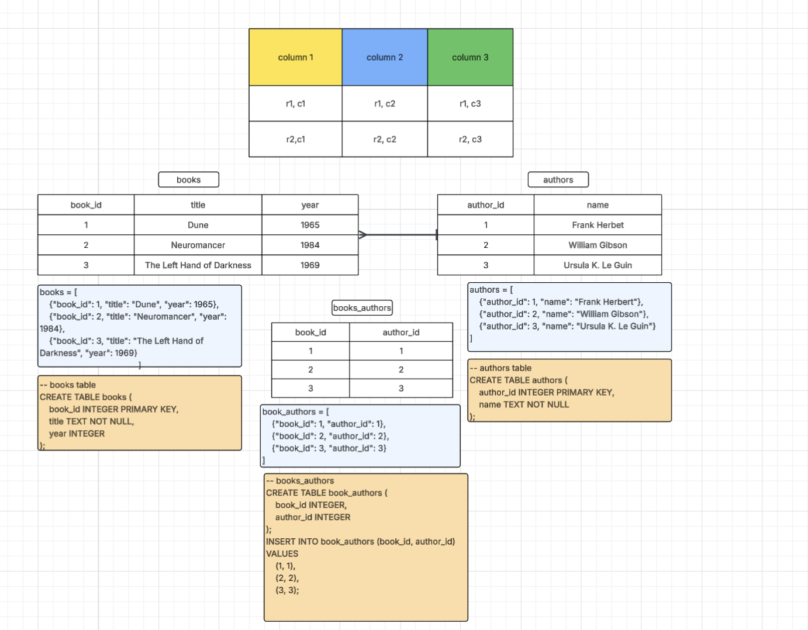

Lecture materials, examples, and supporting files will be organized here as the semester progresses.
Week 1: Course Introductions
Class 1: Course Introduction and Overview of Databases
We will start by reviewing the course structure, tools, assessment plan, and semester project, then move into a first discussion of what databases are and why database systems matter.
Core course themes: relational database systems, SQL, NoSQL, and web implementation.
Course tools: EdStem Workspaces, LucidChart, GitHub, SQLite DB Viewer, VS Code, Python, Flask, Jinja, SQLite, and MongoDB.
Assessment overview: quizzes and participation, homework, group project, midterm, and final exam.
Final project: a semester-long group project building a dynamic, data-driven web application with an SQLite backend.
Database overview topics
Starting question: what makes a database different from a file or a record-keeping system?
Databases as organized collections of data designed to be found, updated, trusted, and used by people and programs.
Why early program-owned files became limiting as organizations, hardware, and shared data needs grew.
How the relational model separated application, logical, and physical views of data.
Enterprise database concerns: atomicity, consistency, isolation, durability, scale, and stability.
Modern database landscape: OLTP systems, warehouses, in-memory databases, embedded databases, SQL platforms, and NoSQL choices.
Week 2: Python Review and Data Persistence
Class 2: Python Review - From Collections to Persistence
In Class 1, we explored what makes a database different from files and data held in a running program. We will return to that distinction by reviewing how Python organizes data in memory, then close by asking how that data can survive after the program stops.
Optional: set up Python in VS Code on your own device
If you would like to use Python in VS Code on your own computer, these guides are here for reference. We may walk through setup in class, but these resources are available for you to follow independently.
Briefly revisit values and types, variables, output, conditionals, functions and return values, and loops. Use these tools throughout the collection examples rather than spending the class reteaching introductory syntax.
Main focus: lists, dictionaries, and tuples
Lists: ordered, mutable sequences; access by index, slice, append, update, and iterate.
Dictionaries: mutable mappings from keys to values; read and update fields, add entries, and iterate over keys and values.
Tuples: ordered sequences whose elements cannot be reassigned; access by position and unpack values to represent a fixed record.
Compare representations of the same record: what does a position tell us, and what does a named key tell us?
Build a small in-memory table as a list of dictionaries or tuples. Practice finding records, filtering rows, and updating values where the structure allows it.
Closing discussion: data in memory vs data on disk
Python collections hold data in the running program's memory. Without saving it, that program state is lost when the program ends.
Files on disk provide persistence: saved data can be read again in a later run or shared with another program.
Changing an in-memory collection does not automatically change a file; loading and saving are explicit steps.
Saving rows is only part of the database story. With plain collections and files, our code still has to enforce rules such as unique IDs and valid values.
Exit question: We have a list of records in Python. If we stop the program now, what is lost, and what would we need to save so another run could reconstruct those records? Class 3's CSV/TSV lab will put that transition into practice.
Class 3: In-Memory Data Structures Lab and CSV/TSV
Class 3 focused on the in-memory data structures lab, building on Class 2's Python review. Homework extended this work to filtering and analyzing CSV/TSV files with Python. The CSV/TSV lecture originally planned for this class will open Class 4.
Inspect rows, fields, headers, and delimiters in CSV and TSV files.
Load file data into Python and connect the records to the collections reviewed in Class 2.
Modify data in memory, save it to disk, and reload it to see what persists between program runs.
Discuss what a text file provides and which responsibilities still belong to the program.
Week 3: From CSV/TSV to SQLite
Follow the same zoo animal data from a text file into Python, onto a webpage, and then into a database table. The week connects the CSV/TSV homework to a first hands-on introduction to relational tables and SQL.
Class 4: CSV/TSV Review and a Data-Driven Zoo Webpage
Begin with the CSV/TSV slides carried over from Week 2 and questions from the homework. Work with animal records in Python at the command line, then see how those same records can populate a webpage.
Revisit headers, rows, fields, delimiters, and quoted values. Compare comma-separated CSV with tab-separated TSV.
Use Python's csv.DictReader to load records as dictionaries; specify a tab delimiter for TSV. Remember that file values are read as strings and may need conversion for calculations.
Connect the homework to a short walkthrough: select fields, filter matching rows, and count or summarize the results.
Command-line walkthrough: the zoo data
Inspect animals.csv and its fields: name, species, habitat, and image.
Run the Python script to load the file into a list of dictionaries and print each animal's name and habitat.
Filter animals by habitat or species, then count the matches. Identify which part of the code chooses rows and which part chooses fields.
Edit a record in the CSV and rerun the script. Compare this with changing only a dictionary in memory.
Guided demo: use the same records on a webpage
Trace the path CSV file → Python records → HTML template → animal cards in the browser. Use the supplied Flask app to see where the records are loaded, passed to the template, and displayed by a loop. Focus on the connection between data and the page; detailed Flask routing, configuration, and template inheritance will come later.
Find where an animal's name, species, habitat, and image filename appear in its card.
Change a CSV value, reload the page, and observe how the displayed content changes when the app reads the file again.
Apply a familiar Python filter before passing the records to the template and compare the browser results with the command-line output.
Try it: customize the CSV zoo
Change an animal's name or habitat and add one new animal row, preserving the existing headers.
Use an available image filename and check that the new animal card appears correctly.
Choose a habitat or species filter and predict which cards should appear before running it.
Optional extension: add a new field, such as diet, to the CSV and display it in the template.
Exit question: Which changes belonged to the data, which belonged to the Python code, and which belonged to the template? What would we need to change if the animal records came from a database instead of a CSV file?
Class 5: Database Fundamentals and SQL Tables

From records to related tables: books, authors, and a linking table. To support multiple authors per book, use the linking table for two one-to-many relationships. The sample SQL shown here does not yet declare foreign-key constraints.
By the end of this week
Model entities and attributes as tables, columns, and rows.
Explain primary keys and foreign keys, and how columns and rows organize data in a table.
Create, populate, and query an SQLite animal table to supply data to the zoo webpage.
Start with the components of a relational database and model entities, attributes, and relationships together. Then connect those ideas to the zoo data: create and populate an SQLite table, use it to recreate the animal webpage, and work in small groups to give the zoo a theme.
Use the table reference image to identify columns, rows, and individual values. Connect these to the headers and records in the zoo CSV.
Identify the things a system needs to describe: for example, books and authors, students and classes, or animals and habitats. Model these entities with tables and their attributes with columns.
Draft a table together in Lucidchart, name its attributes, and add example rows. Ask what information each row represents and how we could identify it uniquely.
Add a related entity and discuss how the records connect. Introduce keys and cardinality using the vocabulary below.
Discuss why systems may use separate databases when their purposes, users, data lifecycles, or isolation needs differ.
New terms: keys and relationships
Primary key: a column, or combination of columns, that uniquely identifies each row in a table.
Foreign key: a column, or combination of columns, that references a key in another table, typically its primary key, to link related records.
Cardinality: how many records may participate in a relationship. Describe the minimum and maximum, such as zero or one, exactly one, or many.
One-to-many relationship: one record can relate to many records in another table; for example, one habitat can house many animals in a model where each animal has one assigned habitat.
Many-to-many relationship: records on both sides can have multiple matches. Students can take many classes, and classes can have many students.
Linking table: represent that many-to-many relationship with an enrollment table containing student and class foreign keys. This distributes the relationship into two one-to-many relationships: student to enrollment and class to enrollment.
Trace the new path SQLite table → SQL query → Python records → HTML template → animal cards in the browser. Use supplied Python database-access code to replace the CSV loader with a query that returns the same named fields. Reuse the animal-card template and compare the output with the CSV version.
Small-group activity: build a themed zoo
Choose a theme, such as an Arctic wildlife park, rainforest sanctuary, or imaginary-creature zoo.
Create your group's animals table and write INSERT statements for at least five animals that fit the theme. Use the shared column names so the supplied webpage can display your records.
Make the names, species, and habitats reflect the theme. Use available image files or add appropriate images with matching filenames.
Run a SELECT query to inspect the table and a WHERE query to show a meaningful subset. Include enough variety in the data for the filter to exclude some rows.
Connect the supplied app to your SQLite database, update the page heading to match your theme, and verify that the cards display your table's records.
Share the webpage and the SQL used to create, populate, and filter the table. Explain one CSV-to-table mapping and how the query determines what appears.
Check your work: The database contains the themed records, the webpage displays them, and the filtered query returns the expected subset. Save your SQL statements so you can recreate the table and its contents.
Exit question: Our zoo app uses one table. If habitats needed their own attributes, what would a separate habitat table contain, and where would the foreign key go? Describe the relationship's cardinality. Week 4 will develop these modeling ideas further with relationships and ER diagrams.